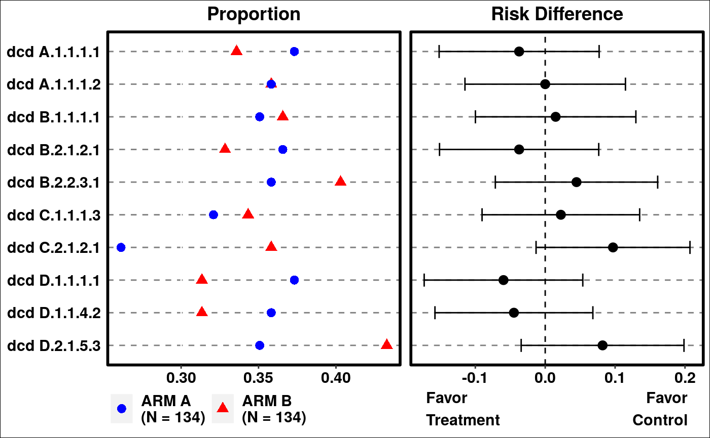
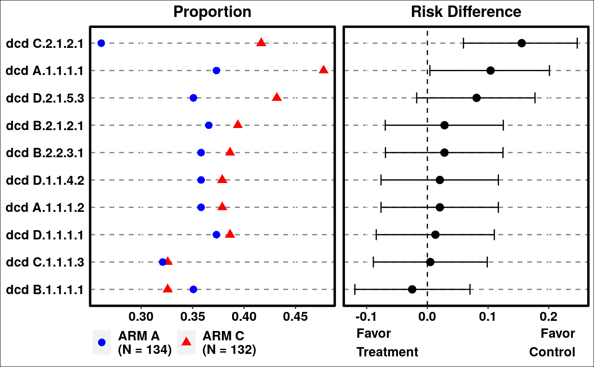
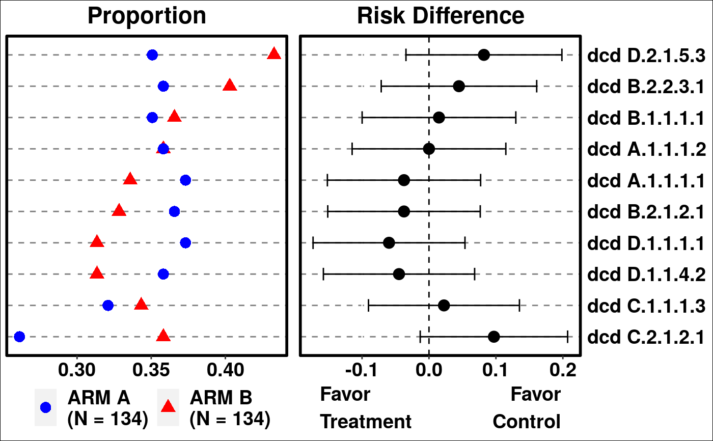
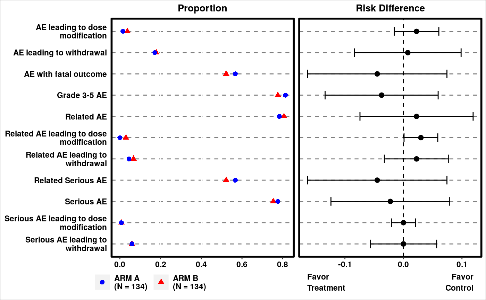

g_events_term_id.RdThis function plots commonly occurred events by number of unique subjects with events. It creates basic summary of events and compares event occurrences between comparison and reference arms, and can be used for events data such as Adverse Events.
g_events_term_id( term, id, arm, arm_N, ref = levels(arm)[1], trt = levels(arm)[2], sort_by = c("term", "riskdiff", "meanrisk"), rate_range = c(0, 1), diff_range = c(-1, 1), reversed = FALSE, conf_level = 0.95, diff_ci_method = c("wald", "waldcc", "ac", "score", "scorecc", "mn", "mee", "blj", "ha", "beal"), axis_side = c("left", "right"), color = c("blue", "red"), shape = c(16, 17), fontsize = 4, draw = TRUE )
| term |
|
|---|---|
| id |
|
| arm |
|
| arm_N | ( |
| ref |
|
| trt |
|
| sort_by |
|
| rate_range | Numeric |
| diff_range | Numeric |
| reversed |
|
| conf_level |
|
| diff_ci_method |
|
| axis_side |
|
| color | Color for the plot. |
| shape | Shape for the plot. |
| fontsize |
|
| draw |
|
grob object
there is no equivalent STREAM output
library(random.cdisc.data) library(osprey) ADSL <- radsl(cached = TRUE) ADAE <- radae(cached = TRUE) # add additional dummy causality flags ADAE <- ADAE %>% mutate(AEREL1 = (AEREL == "Y" & ACTARM == "A: Drug X")) %>% mutate(AEREL2 = (AEREL == "Y" & ACTARM == "B: Placebo")) %>% rtables::var_relabel( AEREL1 = "AE related to A: Drug X", AEREL2 = "AE related to B: Placebo" ) term <- ADAE$AEDECOD id <- ADAE$USUBJID arm <- ADAE$ACTARMCD arm_N <- table(ADSL$ACTARMCD) ref <- "ARM A" trt <- "ARM C" # Example 1 p1 <- g_events_term_id( term, id, arm, arm_N )grid.newpage() grid.draw(p1)# Example 2 p2 <- g_events_term_id( term, id, arm, arm_N, trt = trt, ref = ref, sort_by = "riskdiff", diff_ci_method = "ac", conf_level = 0.9 )grid.newpage() grid.draw(p2)# Example 3 p3 <- g_events_term_id( term, id, arm, arm_N, sort_by = "meanrisk", axis_side = "right", fontsize = 5 )grid.newpage() grid.draw(p3)